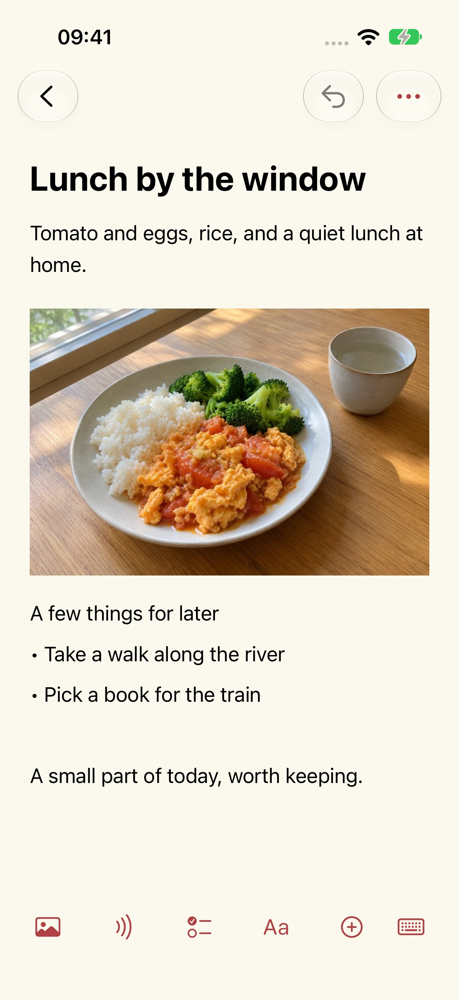
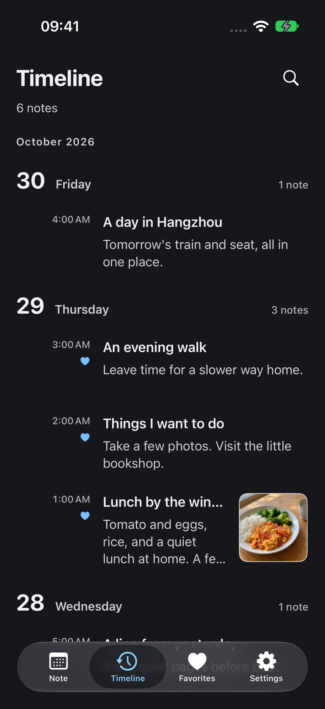

Help & Support
Updated: 2026-10-29
Why I made Mowyns Note
I wanted a simple, useful notebook that was completely free. After a long search, I still hadn't found one that suited me, so I made Mowyns Note. I use it for my own everyday notes.
Give each day its own space
I wanted to open my notebook and see today. The calendar shows one day's entries at a time, so yesterday's notes stay with yesterday. Earlier entries are still there whenever you want them: choose a date or browse the timeline. A new day has room for new things.




Keep a little of today
Take a photo of lunch and add a few words. Jot down something you would like to do. Words, photos and recordings can live together in the same note.
Put the trip on the right dates
Before a trip, save train details, seat numbers, ticket screenshots and places to visit under the relevant dates. Open that day when it arrives and your plans are there. A few days of notes become a simple itinerary.
A quick way to the calendar and search
At the top of the daily list, pull down once to reveal the calendar, then pull down again to open quick search. With the calendar collapsed, swipe the date heading left or right to move to the next or previous day.
Make it comfortable to read
Choose a theme color and a light or dark appearance. Adjust the text size and line spacing to suit you.
Start a note
Choose New Note on the notes page and enter a title and text. Use the editor toolbar to add pictures, recordings, checklists, tables and files.
Saving and backups
Edits are saved locally. Go to Settings → Data Management → Backup & Migration to export or import a plain or encrypted backup. Keep your own backups; this version does not offer automatic cloud sync.
Transcription is unavailable
The recording remains in its card. Transcription requires speech-recognition permission and a supported device and language. It does not fall back to cloud recognition. Check microphone and speech-recognition permissions in system settings.
Restore a deleted note
Open Settings → Data Management → Recycle Bin to restore a note. After permanent deletion, restoration requires a backup you previously exported. The developer does not hold a copy of your notes.
Encrypted-backup passwords
Passwords are not stored in the app. A backup cannot be decrypted if its password is forgotten. If the notes are still on the original device, you can export a new backup with a new password.
Price and accounts
This version is free, with no in-app purchases, subscriptions or ads. No account is needed.